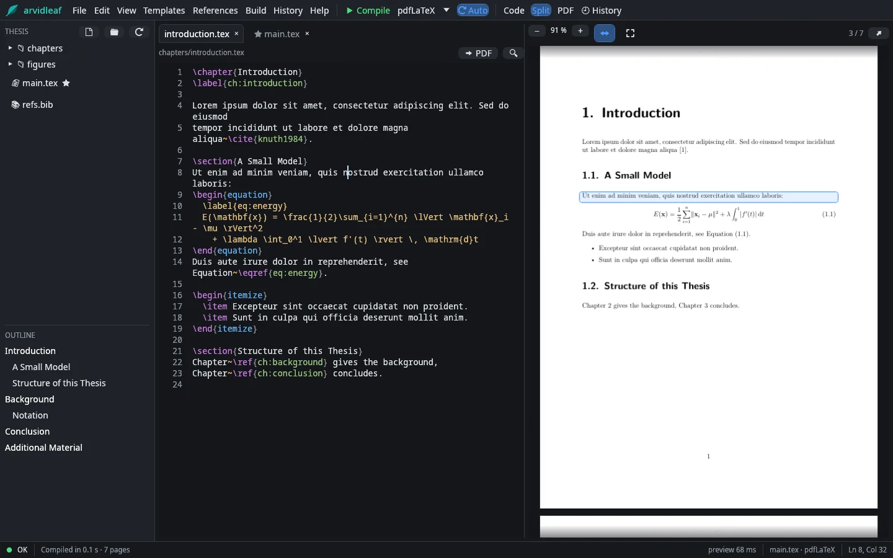
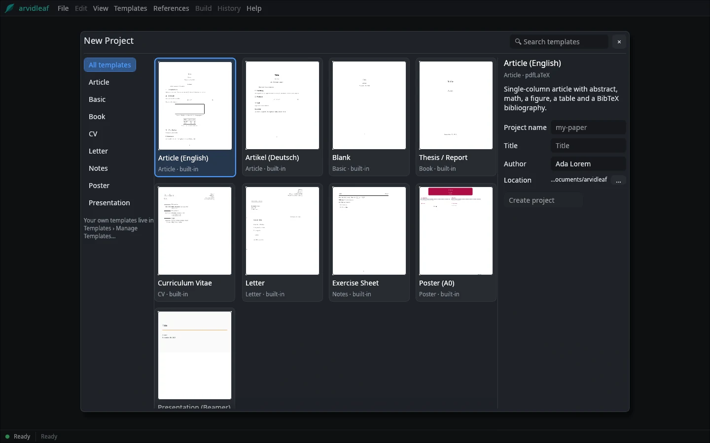
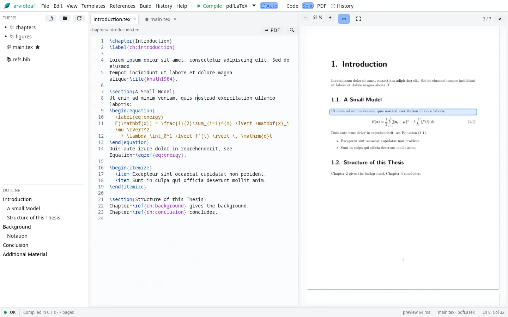
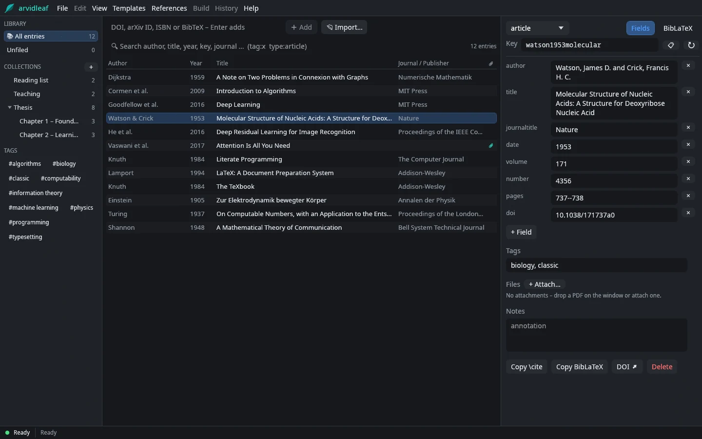
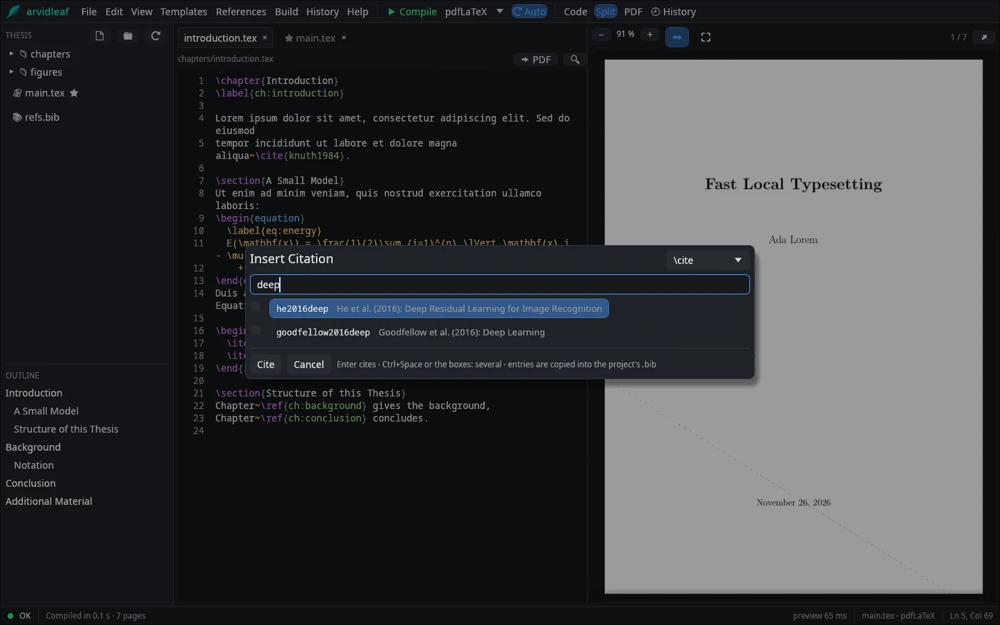

Instant preview
Compile with Ctrl+Enter (or automatically on save) and see the page about 60 ms later. Double-click the PDF to jump to the source, press Ctrl+J to jump back.
Free & open source · v0.1 · Rust
arvidleaf is a local LaTeX editor with a live PDF preview, a built-in reference manager and zero waiting for someone else's server. Your files stay on your disk, your TeX Live does the work, and nothing ever times out.

Everything you like about writing LaTeX in the browser – minus the browser.
Compile with Ctrl+Enter (or automatically on save) and see the page about 60 ms later. Double-click the PDF to jump to the source, press Ctrl+J to jump back.
Projects are plain folders. No login, no upload, no tracking. Your thesis never leaves your laptop unless you want it to.
Your own TeX Live with every package you have installed, pdfLaTeX, XeLaTeX or LuaLaTeX via latexmk – and no timeout, however big the document gets.
Highlighting, completion for commands, labels, citations and files, auto-closing environments, \usepackage added for you when you use something new – and an optional Vim mode.
A snapshot after every successful compile, every ten minutes and whenever you ask. Compare file by file and restore a single file or the whole project.
A full reference manager lives inside the editor: add papers by DOI, arXiv ID or ISBN, cite with Ctrl+Shift+C, and the entry lands in your project's .bib.


arvidref – the built-in reference manager
No second program, no copy-pasting BibTeX, no broken bibliographies.

Paste a DOI, arXiv ID or ISBN and press Enter. Drop PDFs on the window – the DOI is read from the first page. BibTeX, CSL-JSON and a direct import from a Zotero data folder work too.
Nested collections, tags, fast search across authors, titles, years and notes, duplicate detection and PDF attachments in the built-in viewer.
The library is a single library.bib you can version with git or sync anywhere. Untouched entries are written back byte for byte, with daily backups.
\cite{ completes from your project and your library..bib, so the project still compiles for your co-authors.
The install scripts set up TeX Live, poppler and Rust, build arvidleaf and add it to your app menu.
Arch, Debian/Ubuntu, Fedora, openSUSE
git clone https://github.com/Arvuud/arvidleaf.git
cd arvidleaf
./install.shHomebrew, MacTeX
git clone https://github.com/Arvuud/arvidleaf.git
cd arvidleaf
./install-macos.shwinget, MiKTeX – in PowerShell
git clone https://github.com/Arvuud/arvidleaf.git
cd arvidleaf
powershell -ExecutionPolicy Bypass -File .\install.ps1arvidleaf is an early release (v0.1). It is developed and tested on Linux; the macOS and Windows installers are new. Found a bug? Open an issue.